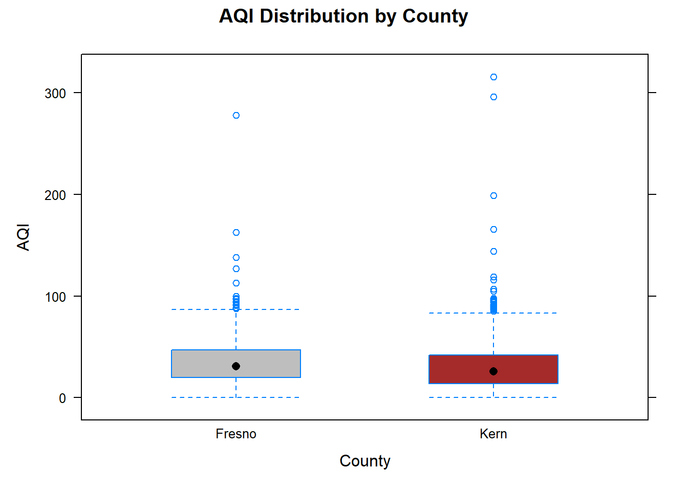

Figure 12.1: AI art generated by keywords “two-sample t-test”
Consider comparing independent populations in regard to the mean or median of some attribute, or two treatments by comparing the true mean or median response under each treatment in an experiment. In this section, the following hypothesis tests (HT) for such comparisons are illustrated:
t-based or t-test based for comparing two means
Wilcoxon rank sum test for comparing two medians
Randomization test for comparing two means or two medians
For confidence intervals (CIs), an overview of the two-sample \(t\)-based CI for comparing means and Wilcoxon-based CI for comparing medians is provided. Equations/formulas used in HT or CIs will be kept at a minimum as the focus is on using software to carry out these methods. That being said, those new to or not comfortable with HT or CIs should consider reviewing Chapter 11. These methods will be illustrated using a case study.
For any statistical inferential method to provide meaningful results, several assumptions are made about the data on which the method is intended to be used.
Data assumptions
The methods discussed in this section one or more of the following assumptions about the data.
Assumption 1. Independence of the observations. The two groups or populations being compared should be independent of each other. This means that the observations in one group should not be related or dependent on the observations in the other group.
Assumption 2. No clear outliers in either sample.
Assumption 3. Normality or large sample. The data for each sample should be roughly normally distributed. If the sample size is large enough, the normality assumption is not needed.
Assumption 4. Equal variance or spread. The variability in each sample should be about the same.
While these assumptions are assessed within the illustrations of the inferential methods using a case study, assumption 1 can be assessed based on study design, histograms and boxplots for assumption 2, quantile-quantile plots for normality component of assumption 3, and boxplots, histograms, and sample standard deviation for assumption 4.
In these sections, we use R functions to conduct the inferential methods described earlier and provide detailed explanations of their use. While other functions may be used for tasks such as importing data and summarizing data numerically or graphically, we do not discuss them in this section as they have been covered in a previous module.
Notation
To improve readability, we minimize the use of notation. However, when comparing two populations or treatments denoted by A and B, we use the following notation:
\(\mu_A\) and \(\mu_B\) denote the population or true mean response under A and B, respectively.
\(\bar{y}_A\) and \(\bar{y}_B\) denote the sample mean of the corresponding samples obtained from A and B.
\(\eta_A\) and \(\eta_B\) denote the population or true median response under A and B, respectively.
\(m_A\) and \(m_B\) denote the sample median of the corresponding samples obtained from A and B.
12.1 Two sample t-based methods for comparing two means
The independent two-sample t-test is a commonly used hypothesis test for comparing two groups or populations. There are two versions of this test: Student’s t-test and Welch’s t-test. Both tests can be used to compare whether the difference between the true averages (from two independent populations) is statistically significant or to determine if an effect (when comparing two treatments) is significant. This helps to determine if the difference or effect is due to chance or not. The t-based confidence interval for the difference in true averages provides a range of plausible values for the difference at a specified level of significance. These methods are generally referred to as t-based methods.
Student’s two-sample t-based methods assume assumptions 1, 2, 3, and 4 hold. The version of the t-based methods used here are called the Welch two-sample t-based methods, which do not require homogeneity of variances assumption. The Welch two-sample t-test statistic takes the following form:
where \(n\) and \(s\) denote the sample size and sample standard deviation from each group.
The data should consist of two variables of interest: a numerical variable that measures the outcome or response of interest and a factor or grouping variable with two levels. The grouping variable distinguishes the different populations or treatments (A or B). The hypothesis takes the form
Under \(H_0\), the null distribution of T is a t-distribution with a certain degree of freedom1, and it is used to compute the p-value. The function two.mean.test()2 computes the test statistic and p-value for the two-sample t-test, as well as provide a confidence interval for \(\mu_A - \mu_B\).
R functions
### two.mean.test( y ~ x , data , first.level,
### direction, conf.level,
### welch)
# y: Replace y with the name of the resposne (measured)
# variable of interest.
# x: Replace x with the name of the factor or grouping
# variable that distinguishes the different populations
# or treatments.
# data: Set equal to the dataframe name.
# first.level: Set equal to the level/category from the
# grouping variable. It determines how the difference
# in sample means is computed. It should be consistent
# with the formulation of the hypothesis.
# direction: Set equal to the sign in the alternative: "two.sided",
# "greater" , or "less".
# conf.level: Set equal to the confidence level for the CI (default is .95).
# The function will always provide a CI by default.
# welch: Set equal to TRUE (default) for Welch's t-test. Set
# to FALSE for Student's t-test.
Many of the R functions used in this resource will have identical arguments. Therefore, while the arguments will be provided for any functions used, common arguments such as data, direction, … will generally only be described once within a given module.
Note
We apply two-sample t-based methods (hypothesis testing and CI) to the data described in the case study provided in Chapter 3. The goal is to determine if there is a significant difference in PM10 concentration between Kern and Fresno counties and to estimate the difference between the true means.
The data provided in the case study consists of several variables (PM10, AQI, …, county, and City.Name). A subset of the data was created so that it included only PM10 (daily PM10 levels) and county (county in which the monitoring site is located) for the two counties of interest. To start, the data are imported and numerical and graphical summaries of the data would be created. However, graphical and numerical data summaries are covered in other modules. The focus here is to assess model assumptions either numerically or graphically.
# Import the data and save the data in a # dataframe called 'KernFresnoPM10df'KernFresnoPM10df<-read.csv("datasets/KernFresnoDailyPM10.2021.csv")# Load the 'dplyr' package, which provides the 'mutate()' function.library(dplyr)# Tell R that 'county' should be treated as a factor variable by using mutate().KernFresnoPM10df<-mutate(KernFresnoPM10df, county=as.factor(county))# Print a summary of the data frame, including # variable names and other information.summary(KernFresnoPM10df)#> PM10 AQI temp Latitude #> Min. : 0.00 Min. : 0.0 Min. : 35.13 Min. :35.05 #> 1st Qu.: 18.00 1st Qu.: 17.0 1st Qu.: 54.04 1st Qu.:35.44 #> Median : 31.00 Median : 29.0 Median : 64.64 Median :35.64 #> Mean : 37.34 Mean : 32.1 Mean : 66.78 Mean :35.98 #> 3rd Qu.: 48.00 3rd Qu.: 44.0 3rd Qu.: 80.00 3rd Qu.:36.79 #> Max. :437.00 Max. :316.0 Max. :102.00 Max. :36.99 #> NA's :391 #> Longitude windspeed state county #> Min. :-119.8 Min. : 0.7708 Length:2773 Fresno:1046 #> 1st Qu.:-119.7 1st Qu.: 2.4333 Class :character Kern :1727 #> Median :-119.0 Median : 3.6500 Mode :character #> Mean :-118.9 Mean : 4.4577 #> 3rd Qu.:-118.1 3rd Qu.: 5.2583 #> Max. :-117.7 Max. :22.4625 #> #> City.Name #> Length:2773 #> Class :character #> Mode :character #> #> #> #> # Load the 'lattice' package, which provides the 'bwplot()' function.library(lattice)# Create a box plot of Air Quality Index (AQI) by county levels using the 'bwplot()' functionbwplot(AQI~county, # y ~ x data =KernFresnoPM10df, # set the data frame to use xlab ="County", # set the x-axis label ylab ="AQI", # set the y-axis label main ="AQI Distribution by County", # set the plot title fill =c("gray", "brown"))# fill the boxes with specified colors

Code
# Load the 'mosaic' package, which allows using # formula expressions in 'mean()' and 'sd()'library(mosaic)# Compute the sample mean for each countymean(AQI~county , data=KernFresnoPM10df)#> Fresno Kern #> 35.20076 30.21656# Compute the sample standard deviation for each countysd(AQI~county , data=KernFresnoPM10df)#> Fresno Kern #> 22.18129 23.16972
The difference in samples means between Kern and Fresno county is
\[30.217-35.201=\bar{x}_K-\bar{x}_F=-4.984.\]
While the observed difference serves as one estimate of \(\mu_K - \mu_F\), a confidence interval (CI) provides a better sense of the size of the difference between \(\mu_K\) and \(\mu_F\). Additionally, a hypothesis test is used to determine whether this difference is significant, but this depends on certain assumptions about the data. While the samples are not necessarily random, they are independent from each other in the sense that the measurements in Kern county are not affected by the measurements in Fresno county. Although random sampling is ideal, the t-based methods can still be used with non-random samples, but any conclusions drawn only apply to the specific sample and not necessarily to a larger population3. According to the summary output, the sample size for each group is large. A common rule of thumb is that a sample is considered large if it contains more than 30 observations4. The boxplots indicate that the variability in PM10 concentration appears to be about the same for both counties, and that there are several outliers present in both counties.
Although the boxplots suggest the variability is about the same in both groups, for illustration, we also assess numerically using the sample standard deviations. The standard deviations for Fresno and Kern are 22.18 and 23.17, respectively, and they appear to be similar. One rule of thumb for comparing the variability in two groups is to take the ratio of their sample standard deviations (22.18/23.17 or 23.17/22.18). If the ratio falls between 0.5 and 2, then the variability in both groups is considered similar enough. However, it is important to note that graphical assessment of assumptions is generally sufficient and this rule of thumb should not be used if outliers are present.
Overall, not all data assumptions are met. Alternative methods to be discussed would be more appropriate for this data, but for illustration we analyze the data using the two-sample t-based methods. Let \(\mu_K\) denote the true mean PM10 levels in Kern county. \(\mu_F\) is defined analogous for Fresno county. Since an aim is to determine if there is significant difference between PM10 levels in Kern and Fresno county, the hypothesis is
# Source the function two.mean.test() so that it's R's memory.source("rfuns/two.mean.test.R")# Recall that the data was imported and stored in "KernFresnoPM10df"# The function will require the following information:# y: Replace with 'PM10'# x: Replace with 'county'# data: Set equal to a 'KernFresnoPM10df'# first.level: The county that appears first in the hypothesis# (Kern county), so set equal to "Kern"# direction: It is a two-sided alternative, so set equal to "two.sided"# conf.level: Set equal .99 since we seek a 99% CI# welch: The Welch t-test is the default method here, so using # the default value (TRUE)two.mean.test(PM10~county , # y ~ x data =KernFresnoPM10df ,# specify the data frame to use first.level ="Kern" , # specify the first level in the hypothesis direction ="two.sided" ,# specify a two-sided alternative conf.level =.99)# set the confidence level to .99#> Theoretical-based two-sample test for independent samples #> #> formula: PM10 ~ county #> sample mean of Kern group: 35.06717 #> sample mean of Fresno group: 41.09943 #> sample sd of Kern group: 32.26383 #> sample sd of Fresno group: 31.88051 #> #> difference between groups: ( Kern group ) - ( Fresno group ) #> obs t-test statistic: -4.807498 p-value = 0 #> df= 2225.184 #> direction: two.sided #> #> Confidence level: 0.99 #> CI:( -9.267081 , -2.797435 )
The output includes the following information:
The sample mean and standard deviation under each level of the grouping/factor variable.
The value of the observed statistic: \(T=-4.10\)
p-value
A confidence interval
Based on the output, the observed value of the test statistic is \(T=-4.10\). The p-value is extremely small (0). Since p-value\(\leq\alpha=.01\), we have significant evidence to reject \(H_0\). Based on the size of the p-value, we may also say that there is very strong evidence to reject \(H_0\). By setting \(\alpha = 0.01\), we require “stronger evidence” to reject \(H_0\) than if we had used a larger significance level. Therefore, we have strong evidence that there is significant difference between PM10 levels in Kern and Fresno county at the designated monitoring sites.
The output also provides a 99% CI for the difference in true means. The CI is \((-9.270, -2.794)\), and we are 99% confidence that the difference in true means is anywhere between \(-9.270\) and \(-2.794\). Since the interval does not contain \(0\), it is clear that the true average PM10 levels at Fresno county are higher than in Kern county at the designated monitoring sites at 99% confidence. Note that this conclusion only applies to the monitoring sites, since PM10 levels were not measured at random locations within each county.
12.2 Wilcoxon-based methods comparing two medians
When assumption 2 and/or 3 do not hold, t-based methods are no longer applicable. The Wilcoxon-based methods do not require the normality assumption when the samples are small nor is it affected by outliers. Further, the distributions from which each data were sampled do not have to be known5 for these methods, but these methods do require for the distributions to have approximately the same shape. Since the distribution does not have to be a known distribution, it called a non-parametric method6. In short, these methods require assumptions 1 and 4, but also require for the distributions from which each data were sampled to have approximately the same shape and for each sample to be of at least size 10.
The Wilcoxon rank sum test, also called the Mann-Whitney test, can be applied to compare whether the difference between true medians from two independent populations is really different from zero. It can also be used to determine if an effect (when comparing two treatments via medians) is significant or not, as opposed to the size of the difference or effect being due to random chance.
The test statistic for the Wilcoxon rank sum test depends on the ranks of the observed data, and its value will be provided by software. However, some details regarding the computation of the test statistic are provided below:
List the observations for both samples from smallest to largest across both groups.
Assign the numbers \(1\) to \(n_A+n_B=N\) to the observations (across both groups) with 1 assigned to the smallest observations and \(N\) to the largest observation. These are called ranks of the observations.
If there are ties (due to repeated values) in the combined data set, the ranks for the observations in a tie are taken to be the average of the ranks for those observations.
Let \(W\) denote the sum of the ranks for the observations from group A.
The test statistic then takes the form
\[U=W-\frac{n_A(n_A+1)}{2}\]
Whereas the null hypothesis of the two-sample t test is equal means, the null hypothesis of the Wilcoxon test7 is taken as equal medians:
Under \(H_0\), the null distribution of U is called the Wilcoxon distribution and it is used to compute the p-value8. The function two.wilcox.test()9 computes the test statistic and p-value10, as well as a CI.
The CI provided by this method is for the difference in medians between two randomly chosen observations (one from each group)11. This still provides some sense of how different the medians are from each other. However, if both distributions from which the data were sampled are symmetric, then the CI provided is for a difference in medians.
R functions
### two.wilcox.test( y ~ x , data , first.level,
### direction, conf.level)
# y: Replace y with the name of the resposne (measured)
# variable of interest
# x: Replace x with the name of the factor or grouping
# variable that distinguishes the different populations
# or treatments
# data: Set equal to the dataframe being used.
# first.level: Set equal to a level/category from the grouping
# variable. It determines how the difference in
# sample means is computed. It should be consisent
# with the formulation of the hypothesis.
# direction: Set equal to the sign in the alternative: "two.sided",
# "greater" , or "less"
# conf.level: Set equal to the confidence level for the CI (default
# is .95). The function will always provide a CI by default.
Note
We apply the two-sample Wilcoxon-based methods (hypothesis testing and CI) to the data described in the case study provided in Chapter 3 to determine if there is a significant difference in PM10 concentration between Kern and Fresno county and to get a sense of how different the true medians are. The four assumptions of the data discussed earlier in this chapter were explored when illustrating the t-based methods. Although the data consists of large samples and the independence and equal variance assumptions are reasonable, the presence of many outliers in the data should be noted. The Wilcoxon-based methods are not affected by outliers but the distributions from which each sample were obtained should have the same shape. This is explored via a violin boxplot.
library(lattice)# Provides the bwplot() function# Create a violin plot bwplot(PM10~county , data=KernFresnoPM10df , xlab="County" , ylab="PM10" , main="PM10 vs county" , panel=panel.violin)# set equal to panel.violin to create violin plot
The violin boxplot makes it clearer that the distribution of PM10 in both counties approximately have the same shape.
Let \(\eta_K\) denote the true median PM10 levels in Kern county. \(\eta_F\) is defined analogous for Fresno county. Since an aim is to determine if there is significant difference between PM10 levels in Kern and Fresno county, the hypothesis is
# Source the function two.wilcox.test() so that it's R's memory.source("rfuns/two.wilcox.test.R")# The function will require the following information:# y: Replace with 'PM10'# x: Replace with 'county'# data: Set equal to a 'KernFresnoPM10df'# first.level: The county that appears first in the hypothesis# (Kern county), set equal to "Kern"# direction: It is a two-sided alternative, so set equal to "two.sided"two.wilcox.test(PM10~county , # y ~ x data =KernFresnoPM10df , # Specify the data frame to use first.level ="Kern" , # Specify the first level in the hypothesis direction ="two.sided" , # Specify a two-sided alternative conf.level =.99)# Set the confidence level to .99#> Theoretical-based two-sample test for independent samples #> #> formula: PM10 ~ county #> sample median of Kern group: 28 #> sample median of Fresno group: 34 #> sample IQR of Kern group: 30 #> sample IQR of Fresno group: 29 #> #> method: Wilcoxon rank sum test with continuity correction #> difference between groups: ( Kern group ) - ( Fresno group ) #> obs test statistic: U= 759219.5 p-value = 0 #> obs standardized test statistic: Z= -7.048 #> direction: two.sided #> #> difference in location (pseudomedian): -6.000007 #> confidence level: 0.99 #> CI:( -8.000049 , -3.999966 )
The output includes the following information:
The sample median and IQR under each level of the grouping/factor variable.
The value of the observed statistic
p-value
A confidence interval
Based on the output, the observed value of the test statistic is \(U=759219.5\). The p-value is extremely small (0). Since p-value\(\leq\alpha=.01\), we have significant evidence to reject \(H_0\). Therefore, we have strong evidence that there is significant difference between PM10 levels in Kern and Fresno county at the designated monitoring sites.
The output also provides a 99% CI for median of difference between all pairs of observations between both groups (not the difference in group medians). Based on the CI, we are 99% confident that the median difference between two randomly chosen PM10 levels from each county is anywhere between -8.000 and -4.000. Since the interval does not contain \(0\), it is clear that the PM10 levels at Fresno county are higher than in Kern county at the designated monitoring sites at 99% confidence. Note that this conclusion only applies to the monitoring sites, since PM10 levels were not measured at random locations within each county.
12.3 A randomization test using a t-test test statistic
Randomization methods seek to determine if the observed data in each group is different due to an effect of a factor, compared to what would be expected by random chance if the groups were the same and the factor had no effect on the response. These methods can test whether the observed data in each group are different from a randomization distribution generated by randomly allocating the observed data into the two groups. If the observed data are in fact the same (no effect), then it should be just as likely as any ordering generated by random allocation of the data between groups. In other words, if the factor being studied has no effect on the response, then the behavior of the data should be similar to what we would expect if the observations were randomly assigned to the two groups (randomized group assignment). If, however, the groups are different due to a significant factor effect, then the behavior of the data would not be similar to what we would expect if the observations were randomly assigned to the two groups.”
If assumption 2, 3, and/or 3 do not hold, t-based or Wilcoxon methods are no longer applicable. Randomization technically does not require any assumptions, although some assumptions or conditions may be needed depending on how the effect is being quantified (differences in mean, medians, or other measures). Here, we use randomization tests to determine if an effect is significant when using a difference in means and difference in medians. Keep in mind that randomization tests do not have sample size requirements. However, the less data you have, the less power the test has to detect a significant effect or significant difference between two groups.
Comparing means
Here we use a randomization test when quantifying the attribute using the mean. As a test statistic, we use the form of the test statistic provided by Welch’s t-test for the randomization test. The interest here is in determining if an effect (when measures as a difference in means) is significant. Since the test statistic uses both the sample mean and sample standard deviation, this version of the randomization test will require assumption 2. The R function used to conduct the randomization test has similar syntax to that of the t-based methods, but with additional arguments.
R functions
### two.mean.test( y ~ x , data , first.level,
### direction, randtest,
### nshuffles)
# randtest: Set equal to TRUE to obtain the test statistic and p-value
# for the randomization test (for comparing means).
# nshuffles: Set equal to the desired number of randomizations.
Note
Discussion of the t-based methods showed that outliers are present in the data from the case study discussed in Chapter 3, so this test is not appropriate for the data. However, for illustration we carry out the test on the data. The aim is to determine if there is significant county effect on PM10 levels when considering Kern and Fresno county. Let \(\delta_\mu=\mu_K - \mu_F\). The hypothesis is
The following code uses two.mean.test() to compute the test statistic and the corresponding p-value for a randomization test involving a difference in means.
# Data was imported earlier in the section # and 'mutate' converted 'county' into a factor variable.# Source the function two.mean.test() so that it's R's memory.source("rfuns/two.mean.test.R")# The function will require the following information:# y: Replace with 'PM10'# x: Replace with 'county'# data: Set equal to a 'KernFresnoPM10df'# first.level: In the hypothesis, Kern county appeared first in the# difference, so set equal to "Kern"# direction: It is a two-sided alternative, so set equal to "two.sided"# randtest: Set equal to TRUE. # nshuffles: Set equal to 30,000 two.mean.test(PM10~county , # specify the variables for the test data =KernFresnoPM10df , # specify the data frame to use first.level ="Kern" , # specify the first level in the hypothesis direction ="two.sided" , # specify a two-sided alternative randtest =TRUE , # perform a simulation-based test nshuffles =30000)# set the number of randomizations to 30,000#> Simulation based two-sample test for independent samples #> #> formula: PM10 ~ county #> sample mean of Kern group: 35.06717 #> sample mean of Fresno group: 41.09943 #> sample sd of Kern group: 32.26383 #> sample sd of Fresno group: 31.88051 #> difference between groups: ( Kern group ) - ( Fresno group ) #> obs t-test statistic: -4.807498 p-value = 0 #> df= N/A #> direction: two.sided
The output is nearly identical as when conducting a Welch t-test in that it provides some summary statistics, the observed value of the test statistic, and p-value. These type of randomization methods do not provide CIs so one can not assess the size of the effect. At \(\alpha=.01\), we obtain the same decision and conclusion as with the previous tests.
Comparing medians
Here we quantify the attribute using the median. For the test statistic in the randomization test, we use the form of the test statistic provided by the Wilcox rank sum test. The interest here is in determining if an effect (when measures as a difference in medians) is significant. The R function to carry out this test is the same function as with the wilcoxon-based methods, but with some additional arguments to conduct the randomization test.
R functions
### two.wilcox.test( y ~ x , data , first.level,
### direction, conf.level)
### randtest, nshuffles)
# randtest: Set equal to TRUE to obtain the test statistic and p-value
# for the randomization test (for comparing medians).
# nshuffles: Set equal to the desired number of randomizations.
Note
Discussion of the wilcoxon-based methods showed that the data described the case study provided in Chapter 3 are appropriate for the data. However, given the large sample, the Wilcox rank sum test approximates the p-value using the standard normal distribution. This approximation generally works well, but the quality of the approximation declines when the underlying distributions of the two groups are highly skewed or have heavy tails, or as the number of ties increases. Note below that the histogram shows that the PM10 levels in both counties are right skewed. Further, there are over 2000 ties in the data. Therefore, this randomization test provides a more accurate result for this data.
Code
# Data was imported earlier in the section # and 'mutate' converted 'county' into a factor variable.# Load the 'lattice' packagelibrary(lattice)# provides the histogram() functionhistogram(~PM10|county , # ~ "variable" | "grouping factor" data =KernFresnoPM10df , # Specify the data frame to use xlab ="PM10" , # Label the x-axis ylab ="Frequency" , # Label the y-axis main ="PM10 by county")# Add a title to the plot
To determine if there is significant county effect on PM10 levels when comparing Kern and Fresno county, let \(\delta_\eta=\eta_K - \eta_F\). The hypotheses are
The following code uses two.wilcox.test() to compute the test statistic and the corresponding p-value for a randomization test involving a difference in medians
# Data was imported earlier in the section # and 'mutate' converted 'county' into a factor variable.# Source the function two.wilcox.test() so that it's R's memory.source("rfuns/two.wilcox.test.R")# The function will require the following information:# y: replace with 'PM10'# x: replace with 'county'# data: set equal to a 'KernFresnoPM10df'# first.level: In the hypothesis, Kern county appeared first in the# difference, so set equal to "Kern"# direction: It is a two-sided alternative, so set equal to "two.sided"# randtest: Set equal to TRUE. # nshuffles: Set equal to 30,000 two.wilcox.test(PM10~county , # Specify the variables for the test data =KernFresnoPM10df , # Specify the data frame to use first.level ="Kern" , # Specify the first level in the hypothesis direction ="two.sided" , # Specify a two-sided alternative randtest =TRUE , # Perform a simulation-based test nshuffles =30000)# Set the number of randomizations to 30,000#> Simulation based two-sample test for independent samples #> formula: PM10 ~ county #> sample median of Kern group: 28 #> sample median of Fresno group: 34 #> sample IQR of Kern group: 30 #> sample IQR of Fresno group: 29 #> method: randomization test #> difference between groups: ( Kern group ) - ( Fresno group ) #> obs test statistic: U= 759219.5 p-value = 0 #> direction: two.sided
The output is nearly identical as when conducting the Wilcox rank-sum test in that it provides summary statistics, the observed value of the test statistic, and p-value. These types of randomization methods do not provide CIs. At \(\alpha=.01\), we obtain the same decision and conclusion as with the previous tests.
12.4 Sample size estimation and power analysis
Ideally, estimating sample size for a study is one of the first steps that researchers take prior to collecting data. Knowing the sample size required to detect a desired effect at the beginning of a project allows one to manage their data collection efforts. Further, this allows for one to determine how much statistical power the test will have to detect an effect.
The R function pwr.t2n.test() from the pwr R package can be used to calculate statistical power for a two sample t-test when the sample sizes, significance level (\(\alpha\)), and effect size are provided. The function pwr.t.test from the same package will provide the sample sizes required for a given power level, significant level (\(\alpha\)), and effect size. Note that variability in each sample is assumed to be about the same. It is assumed the appropriate assumptions about the data are met12.
R functions
### power.t2n.test( n1 , n2 , d , sig.level ,
### power, alternative)
# n1: Set equal to the number of observations in first sample.
# n2: Set equal to the effect size.
# d: Set equal to the effect size.
# sig.level: Set equal to the desired alpha value (significance level)
# power: Set equal to the desired power (a number between 0 and 1).
# alternative: The direction of the alternative. Set equal to "two.sided".
#
#
### power.t.test(power, d , sig.level ,
### alternative , type)
# power: Set equal to the desired power.
# type: Set equal to "two.sample" .
#
The effect size refers to Cohen’s \(d\), which is defined as the difference between the true means divided by the pooled standard deviation. Cohen’s \(d\) is typically interpreted as follows:
Small effect size: \(d = 0.20\)
Medium effect size: \(d = 0.50\)
Large effect size: \(d = 0.80\) or higher.
These are suggested guidelines and may vary slightly depending on the specific field of research or context of the study.
Note
Refer to the data described in the case study provided in Chapter 3. Let’s suppose the goal is to determine the statistical power of a two sample t-test if one wanted to detect a medium-sized effect when the sample size from each county is 100 at \(\alpha=.01\).
Code
library(pwr)# provides pwr.t2n.test# Note: The output of this function call will be the statistical power for the t-test.pwr.t2n.test(n1 =100 , # Set the sample size for group 1 n2 =100 , # Set the sample size for group 2 d =0.50 , # Set Cohen's d sig.level =0.01 , # Set the significance level for the test alternative ="two.sided")# Specify a two-sided alternative hypothesis#> #> t test power calculation #> #> n1 = 100#> n2 = 100#> d = 0.5#> sig.level = 0.01#> power = 0.8238225#> alternative = two.sided
The statistical power of this test is \(.824\). To further increase the power, one may increase the effect size (the larger it is, the easier it is to detect), increase the value of \(\alpha\) (make it easier to reject \(H_0\) and find a significant effect), and/or increase the sample sizes. The sample data consisted of at least 1000 observations from each county, so set each sample to \(1000\):
Code
pwr.t2n.test(n1 =1000 , n2 =1000 , d =.50 , sig.level =0.01 , alternative ="two.sided")#> #> t test power calculation #> #> n1 = 1000#> n2 = 1000#> d = 0.5#> sig.level = 0.01#> power = 1#> alternative = two.sided
If instead you seek the required sample size for a given power, the argument power could be set to the desired power in the function pwr.t.test():
Code
# Note: The output of this function call will be the required sample size for the t-test.pwr.t.test(power =0.90 , # Set the desired power level d =0.50 , # Set the standardized mean difference between groups sig.level =0.01 , # Set the significance level for the test type ="two.sample" , # Set a two-sample t-test alternative ="two.sided")# Specify a two-sided alternative hypothesis#> #> Two-sample t test power calculation #> #> n = 120.7055#> d = 0.5#> sig.level = 0.01#> power = 0.9#> alternative = two.sided#> #> NOTE: n is number in *each* group
This module provides a few methods for independent two-sample inference. Parametric methods (such as t-based methods) are generally more powerful (assuming all assumptions are reasonably met) than nonparametric methods, such as Wilcoxon-based methods. Nonparametric tests are based on fewer assumptions compared to their parametric counterparts. The cost of fewer assumptions is that nonparametric tests are generally less powerful than their parametric counterparts. Nonparametric tests are used in cases where parametric tests are not appropriate.
For the Welch t-test, the degree of freedom can be tedious to compute. Software will provide the corresponding degrees of freedom and p-value.↩︎
For a two-sample t-test, two.mean.test() is a wrapper function of the R function t.test, but two.mean.test allows the user to choose the order of the difference.↩︎
It turns out that the null distribution of a t-based method approximates the null distribution of a randomization test fairly well, which does not require random samples.↩︎
The rule assumes all other assumptions are met. Although a common rule, it can fail when the distribution of the data resembles a heavy-tailed distribution. Please see Ramsey and Schafer (2013) for further discussion on this issue.↩︎
Known distributions are parametric distributions in that they can be expressed using math formulas. Parametric methods assume that the underlying population data follows a known distribution↩︎
Non-parametric methods assume less things about the data compare to parametric methods.↩︎
If the data distributions do not have approximately the same shape, this test may be used but it is no longer testing a difference in medians, but rather it tests if the median of all pairwise differences (pseudomedian) is not equal to zero. The pseudomedian is not commonly used in practice, but never the less, it can be used to show that two groups are different under this measure.↩︎
The distribution is discrete. However, if a sample size is larger than 50 and there are ties, the distribution is approximated well by a standard normal distribution (default for most software).↩︎
The R function two.wilcox.test is a wrapper function for the R function wilcox.test().↩︎
If there are ties or the sample size is large (rule of thumb is more than 20 in a given group is considered large), the p-value is approximated using a standard normal distribution. The larger the sample, the better the approximation. However, this approximation may be poor especially when the sample size are not very large and/or the underlying distributions of the two groups are highly skewed or have heavy tailed.↩︎
Recall that the mean and median are measures of central location of a distribution. This CI is for a measure of central location called the pseudomedian, which is the median of differences between all pairs of observations between both groups (not the difference in group medians). For symmetric distributions, the median and pseudomedian coincide.↩︎
The R function power.welch.t.test() and sim.ssize.wilcox.test() from the MKpower R package provides statistical power calculations for the two-sample Welch t-test and two-sample Wilcox rank sum test, respectively. However, these functions may be difficult to use for those not familiar with power analysis.↩︎